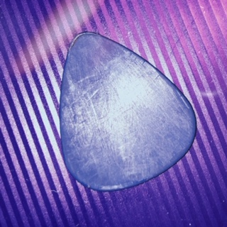
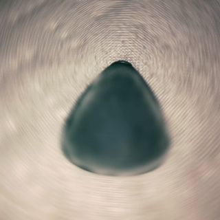

By giving a guitar pick a slight edge, or "claw," it can grasp onto the strings better, giving a fuller, livlier sound. The plectrums come in two sizes, 1.14 mm, and 2.00 mm. The former is often chosen for both instruments, but those who use bass picks will find a comfortable and familiar feel with our thicker plectrum. Down Below, you will see images of both picks (1.14 in blue, 2.00 in green). The claws are in-focus so you can see what I mean!
 